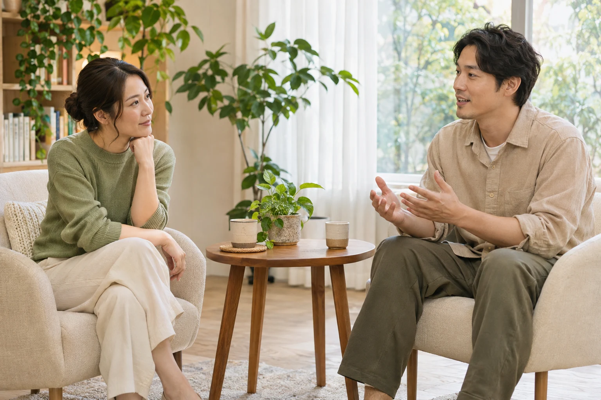

마음을 살피는 시간
나의 마음과 가까운 사람과의 관계를 돌아보는 심리상담을 소개합니다.

ABOUT MOMENTREE
상담과 교육, 경험이 만나는 모먼트리 상담교육연구소입니다.
A LETTER TO YOU
살다 보면 문득
지금보다 나은 내일을 바랄 때가 있습니다.
어디서부터 어떻게 해야 할지 몰라
혼자 망설이고 머뭇거리기도 합니다.
이제 그 자리에만 머물지 말고,
나만의 속도로 작은 변화를 시작해 보세요.
당신의 내일이 조금 더 환해질 수 있도록,
우리 모먼트리가 곁에서 함께하겠습니다.



WHAT WE BRING TOGETHER
나의 마음과 가까운 사람과의 관계를 돌아보는 심리상담을 소개합니다.
배움을 통해 관심과 강점을 탐색하고 새로운 시선을 만나는 시간을 소개합니다.
몸을 움직이고 손으로 표현하며 일상에 새로운 경험을 더합니다.
YOUR NEXT MOMENT
궁금한 점을 정리하고, 나에게 맞는 시간을 준비해 보세요.